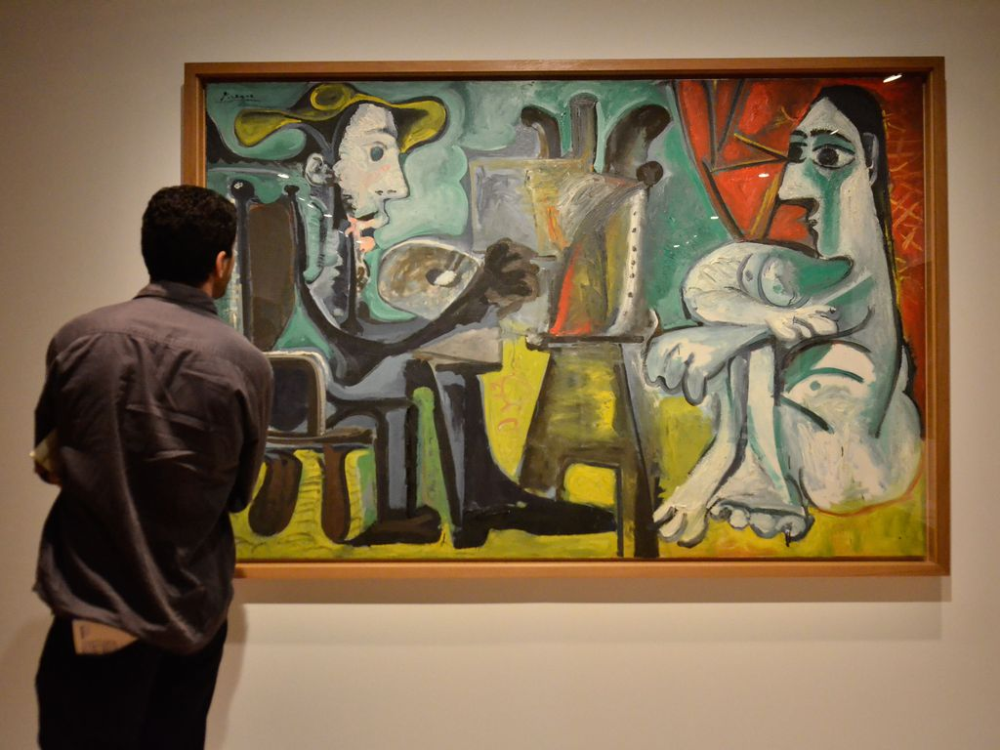

A palavra "Vanguarda" vem do termo militar francês avant-garde, que significa "pelotão que vai à frente". Essa designação simboliza perfeitamente o objetivo dos movimentos: serem os primeiros, os pioneiros, aqueles que estavam à frente do seu tempo e quebravam com a tradição acadêmica.
As vanguardas europeias do início do século XX, que incluíram o Cubismo, Surrealismo, Futurismo, Dadaísmo e Expressionismo, foram movimentos de ruptura radical com a arte tradicional, buscando a inovação e a provocação. O Dadaísmo utilizou o absurdo e o acaso, sendo a obra "Fonte" um urinol exposto por Duchamp seu maior símbolo de questionamento do que pode ser considerado arte. O Surrealismo, influenciado por Freud, explorou o inconsciente e os sonhos, com Salvador Dalí e suas imagens oníricas sendo o grande destaque. O Futurismo glorificou a velocidade, a tecnologia e a guerra, rejeitando museus e o passado. Já o Cubismo, de Picasso e Braque, introduziu múltiplas perspectivas e a técnica da colagem nas pinturas, inovando a forma de representar a realidade. Esses movimentos, repletos de histórias excêntricas e manifestos polêmicos, não só revolucionaram a arte europeia, mas também inspiraram o modernismo brasileiro, incluindo a Semana de Arte Moderna de 1922.